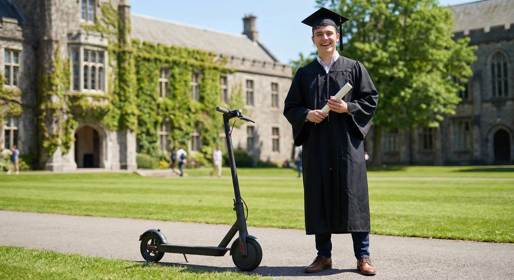
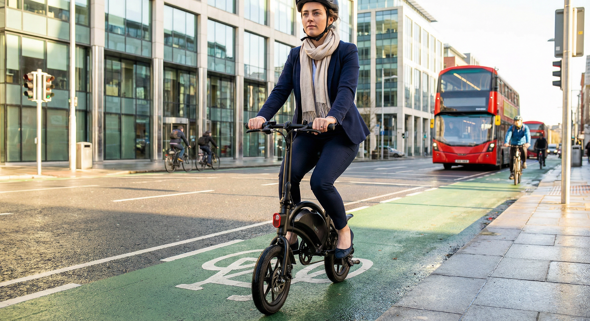
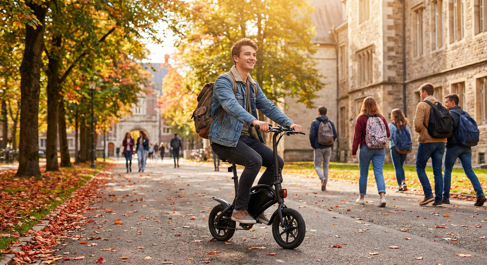
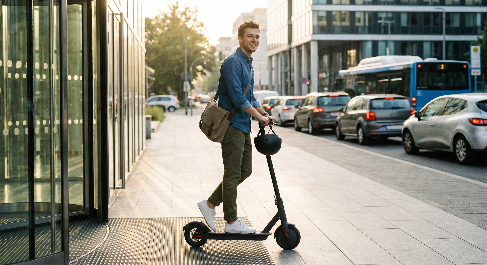

They've earned the cap and gown — now give them the freedom to take on the real world. An electric scooter is the smartest graduation gift going.
See Our Top Picks

Graduation marks the leap into adult life — first jobs, new cities, and a whole lot of independence. An electric scooter gives them a head start on all of it. No waiting for buses, no begging lifts, and no expensive car insurance.
It's the gift that says "go explore." Whether they're commuting to their first job in Dublin or navigating a new city for postgrad, an e-scooter makes daily life easier and a lot more fun. They'll save money from day one.


A monthly bus pass in Dublin costs over €100. Car insurance for a new graduate? Don't even ask. An electric scooter costs cents per charge and nothing to park. It's the most practical investment you can make for someone starting out.
Our range starts at just €250 for a reliable commuter scooter, with longer-range models available for those who need extra distance. Every model is a genuine long-term saving compared to any other form of transport.
Three scooters perfect for the next chapter — from an affordable first ride to a powerful long-range commuter. All ship free across Ireland with a 1-year warranty.

350W Motor • 18–25km Range • 31km/h Top Speed • 8.5" Solid Tires


Browse our full range of electric scooters or get in touch for personalised advice. We'll help you find the ideal graduation gift.
Shop Now Contact Us